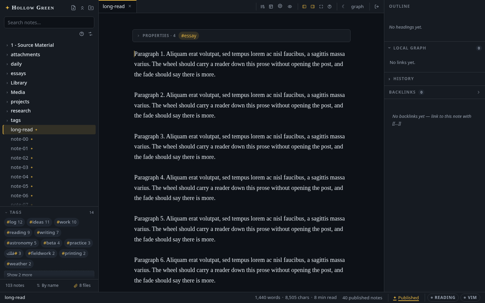
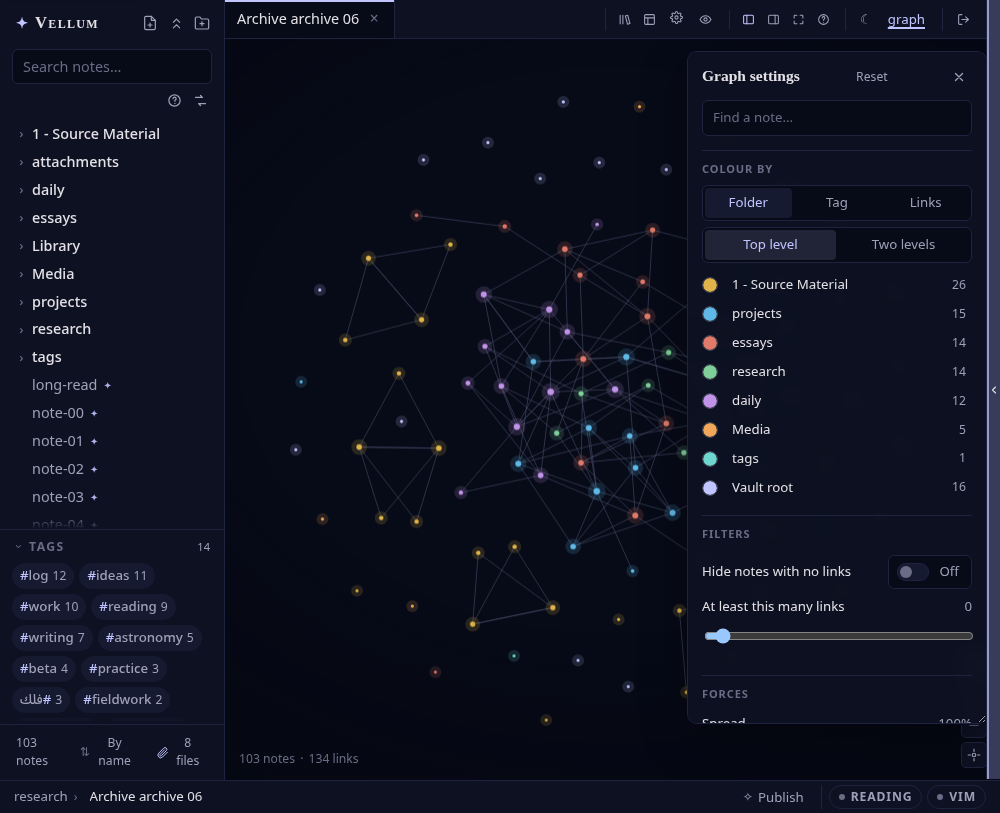
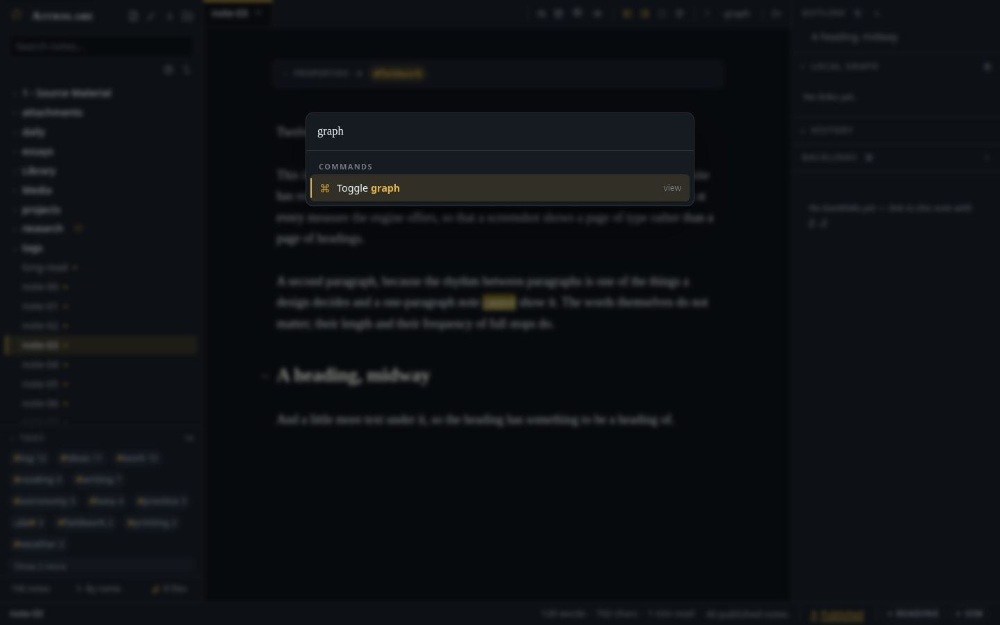

المحرر وعرض القراءة
ما الذي يفعله محرر المعاينة الحية، وما الذي يعرضه أسطرلاب من ماركداون، وكيف تتنقل في الخزانة.

الكتابة
- محرر معاينة حية (CodeMirror 6): تختفي علامات ماركداون إلا في السطر الذي تحرره؛ العناوين بخط مُذيَّل، مربعات المهام قابلة للنقر، روابط
[[الويكي]]ذهبية، والوسوم حبوب صغيرة. - روابط ويكي مع إكمال تلقائي: اكتب
[[واختر أي ملاحظة؛[[الاسم|كنية]]و[[الاسم#عنوان]]مدعومان (اكتب#داخل القوسين لإكمال العناوين). روابط العناوين تُعرض بصيغةملاحظة › عنوانوتقفز إلى العنوان مباشرة، وإعادة تسمية ملاحظة تعيد كتابة كل رابط كان يشير إلى الاسم القديم. - انقر لتتبع، انقر لتنشئ: النقر العادي يتبع الرابط المعروض؛ والنقر على رابط لم يُحلّ (متقطّع الخط) ينشئ الملاحظة، كما في أوبسيديان.
- تحديد يعرف ما ينظر إليه: النقر المزدوج يأخذ الكلمة تحت المؤشر (بحسب العناقيد الحرفية، فتبقى الحركات العربية وفاصل الفارسية داخل الكلمة)، أو الكائن المعروض كله حين تنقر عليه مرتين: رابط ويكي،
#وسم، مقطع$رياضيات$، شريحة كود؛ وداخل السياج يأخذ المعرِّف، بما فيه$jqueryوsnake_case_name. النقر الثلاثي يأخذ الفقرة، والسحب يمد التحديد حرفًا حرفًا، والنقر مع Shift يمده من حيث كنت. مضبوط بالبوابةnpm run check-caretفي القشرتين اللغويتين. - بطاقة الخصائص قابلة للتحرير في مكانها: تنطوي مقدمة YAML إلى بطاقة مفتاح/قيمة أنيقة بوسوم قابلة للنقر ما دام مؤشرك خارجها، وتحرّرها هناك: انقر قيمة لتكتب فوقها، علّم مربعًا لـ
true/false، اختر تاريخًا من تقويم، أضف قيم القوائم وأزلها كشرائح، أضف خاصية، وأزل خاصية بالعلامة × في آخر صفها. إضافة خاصية تسرد كل مفتاح يفهمه التطبيق (titleوtagsوaliasesوbannerوdateوpublishوdescriptionوdirوalignوnumberedوiconوlanguageوcssclasses) مع سطر عمّا يفعله كل منها؛ اكتب لترشّح، و↑/↓ ثم Enter لتأخذ واحدًا، أو اكتب أي مفتاح من عندك. تُكتبtagsوaliasesقوائم (القيم المفصولة بفواصل تصير عناصر). والملاحظة التي لا خصائص لها بعد تلبس البطاقة أيضًا، سطرًا واحدًا فيه إضافة خاصية وتعيين لافتة…، فتبدأ كل ملاحظة من المكان نفسه (الإعدادات ← المظهر واللغة ← بطاقة الخصائص في الملاحظات الفارغة يطفئ ذلك). كل كتابة من هذه جراحية على مستوى البايت: أسلوب اقتباسك وتعليقاتك وترتيب مفاتيحك وكل سطر لم تمسّه يبقى كما كان بالضبط، وحذف آخر خاصية يأخذ معه سياجَي---بدل أن يترك فاصلًا يتيمًا. مفاتيح الآلة (idوuuidوdg-*) تبقى للقراءة فقط، وpublish:له مفتاحه الخاص في شريط الحالة. يعمل الأمر نفسه على ملاحظة.texتعيش خصائصها في كتلة تعليق%---. - قوالب متوافقة مع أوبسيديان:
{{date}}و{{time}}و{{title}}و{{date:FORMAT}}(بالإضافة إلى{{hdate}}للتاريخ الهجري)؛ أدرج قالبًا عند المؤشر أو ابدأ ملاحظة جديدة منه، مع منتقٍ يعاين النتيجة المعبَّأة. انظر القوالب. - الصق المرفقات أو أسقطها: صورة في حافظتك (أو أي ملف مقبول تسحبه من مدير الملفات: PDF وصوت وفيديو أيضًا) تُرفع وتحطّ بصيغة
![[name.png]]عند المؤشر، مع عنصر نائب "جارٍ الرفع…" يحجز المكان أثناء الطريق. أين يحطّ اللصق أو الإسقاط في الملاحظة إعداد. ويمكن أيضًا إسقاط الملفات مباشرة على شجرة الشريط الجانبي: على صف مجلد، أو صف ملاحظة، أو أرض الشجرة نفسها؛ والإسقاط على الشجرة تصنيف: يحطّ الملف في المجلد الذي قصدته، مهما قال الإعداد. والنوع الذي سيرفضه الخادم يُرفض قبل الرفع لا بعده، والتنبيه الذي يخبر بالإسقاط يحمل زر تراجع. - أوامر الشرطة المائلة: اكتب
/في أول السطر لقائمة إدراج ضبابية: تنبيه، سياج كود (مع بحث عن اللغة)، هيكل جدول، قائمة مهام، كتلة رياضيات، فاصل، تاريخ اليوم، رابط ملاحظة اليوم. - إكمال التنبيهات والسياجات:
> [!يقترح كل نوع تنبيه بأيقونته ولونه؛ و```يقترح اللغات وأنت تكتب. - معاينات عند التحويم: استرح على
[[رابط ويكي]]فتظهر بطاقة عائمة بمطلع الملاحظة الهدف معروضًا ([[ملاحظة#عنوان]]يعاين من ذلك العنوان)؛ ومراجع الحواشي تعاين تعريفها. - جراحة الأقسام: اطوِ عنوانًا، أو استخرجه إلى ملاحظة جديدة، أو اسحبه في المخطط لتنقل الشجرة الفرعية كلها؛ انظر الأقسام.
- ترقيم تلقائي للعناوين: معطّل افتراضيًا؛ زر
1.في المخطط يشغّله لعرض القراءة، وnumbered: trueفي مقدمة الملاحظة يرقّمها للجميع، حتى على المدونة. لا يُكتب شيء في ماركداونك. - استمرار القوائم والاقتباسات:
Enterيستمر بقوائم-ومهام- [ ]والقوائم المرقّمة واقتباسات>؛ وEnterعلى بند فارغ يخرج.Ctrl/Cmd ↑/↓ينقل السطر الحالي. لصق رابط فوق نص محدد يصنع رابط ماركداون. - تنسيق النص على المفاتيح التي تعرفها:
Ctrl/Cmd B/I/U، إضافة إلى الشطب (Ctrl/Cmd Shift X) والتظليل (Ctrl/Cmd Shift H) على اختصارات أوبسيديان نفسها. كل واحد منها يبدّل الحالة، ويعمل بلا تحديد (تُدرج العلامات والمؤشر بينها)، ويُطبَّق سطرًا سطرًا على تحديد متعدد الأسطر؛ انظر الاختصارات. - قائمة التحديد وشريط الأدوات العائم: انقر بالزر الأيمن على تحديد (أو
Shift F10) للمفردات كلها مجمّعة: أسلوب النص، البنية، الإدراج، اللون. مكتملة من لوحة المفاتيح، لا تخرج عن نافذة العرض، وتنعكس في العربية. شريط بأسلوب Notion يحمل الإجراءات الستة الأكثر استخدامًا يعوم فوق كل تحديد ما لم توقفه من آخر صف في القائمة (اللوحة تعيده). - عناوين بلون تختاره: كل عنوان، في المحرر وعرض القراءة سواء، يأخذ رمز
--headingمن السمة؛ ومنشئ السمات المخصصة (السمات ← سمة مخصصة جديدة ← النص) يضبطه مباشرة، وتتبعه عناوين مقالات المدونة وعناوين صفحات المكتبة. انظر السمات. - نص ملوّن على مستويين: لوحة ألوان تراعي السمة وتجتاز AA على كل سمة مدمجة، ولوحة ثابتة الحبر حين تقصد ذلك اللون بعينه؛ انظر السمات.
- حذف يقول ما يأخذه، ومتصفح للمهملات؛ انظر الحذف.
- وضع Vim، حفظ تلقائي (تأخير 600 مللي ثانية +
Ctrl/Cmd S)، وسطح يبدأ من لوحة المفاتيح.
العرض
- تضمين الصور:
![[image.png]]و![[image.png|300]]والقياسية تُعرض في السطر من مرفقات خزانتك؛ والصورة التي أُعطيت عرضًا تجلس في وسط العمود، في الملاحظة العربية كما في الإنجليزية؛ والتضمينات المكسورة تأخذ عنصرًا نائبًا متقطّع الخط. حوّم فوق صورة لأدواتها: اسحب المقبض في زاويتها لتغيير حجمها (تُكتب|300لك؛ وانقر المقبض مرتين للحجم الأصلي)، وثلاثة أزرار تحاذيها يسارًا أو وسطًا أو يمينًا بكتابة{.left}أو{.center}أو{.right}في آخر سطرها. والنقر على صورة لم يعد يبدّلها بمصدرها ويقفز بالعرض: تبقى الصورة، والمصدر قابل للتحرير بجانبها. - محاذاة سطر: اختم أي فقرة أو عنوان أو سطر صورة بـ
{.center}أو{.right}أو{.left}أو{.justify}فتجلس تلك الكتلة هناك، فوقalign:الخاص بالملاحظة. تختفي العلامة كسائر الصياغة؛ و/centerو/rightو/leftفي قائمة الشرطة المائلة تكتبها لك. يقرأ Pandoc الأقواس نفسها؛ ويعرضها أوبسيديان نصًا. - تضمين الملاحظات:
![[ملاحظة]]يعرض الملاحظة الهدف كبطاقة كاملة الوفاء (بالتنبيهات والرياضيات وتلوين الكود)، مع زر "افتح الملاحظة" حين يطول المقتطف. - بطاقات PDF والمرفقات:
![[file.pdf]](وmp4 وmp3 وzip…) يصير بطاقة تفتح الملف في تبويب جديد. - التنبيهات:
> [!note]و[!tip]و[!warning]و[!danger]وأقاربها، ملوّنة وبأيقونات، قابلة للطي بـ-. - الرياضيات:
$سطري$و$$كتلة$$عبر KaTeX. - تلوين الكود: الكتل المسيَّجة تُلوَّن لكل اللغات الشائعة، بما يوافق السمة.
- تظليل وتعليقات وحواشٍ:
==تظليل==و%%تعليق مخفي%%ومراجع[^1]مرتفعة تقفز إلى تعريفاتها. - عرض القراءة:
Ctrl/Cmd Eيقلب الملاحظة إلى صفحة معروضة كاملة للقراءة فقط (بالجداول)، وتشارك المحرر منطق الحلّ.
ملفات .tex و.latex ملاحظات من الدرجة الأولى بمُعرِّضها الخاص؛ انظر ملاحظات LaTeX.
التنقل

لوحة الروابط الراجعة: كل ملاحظة تعرض من يربط إليها، مع الجملة التي فعلت.
لوحة المخطط (جدول المحتويات): عناوين الملاحظة المفتوحة، تتابع موضع تمريرك؛ انقر للقفز.
عرض المخطط البياني: محاكاة قوى على لوحة رسم مكتوبة بيدنا؛ اسحب العقد، حوّم لتضيء الجيران، انقر لتفتح. يُفتح تبويبًا في اللوحة المركَّز عليها (
Ctrl/Cmd G)، فيجلس المخطط والملاحظة جنبًا إلى جنب أو يتناوبان. زر المنزلقات يفتح إعداداته: لوّن الملاحظات بحسب المجلد (مستوى أو مستويين) أو بحسب الوسم، مع مفتاح ألوان يمكن فيه إعادة تلوين كل مجموعة أو إخفاؤها؛ بحث يضيء الملاحظات المطابقة؛ مرشحات للملاحظات اليتيمة ولحدّ أدنى من الروابط؛ القوى الثلاث (الانتشار، طول الرابط، الجذب إلى المركز)؛ حجم العقدة، وشفافية الروابط، ومستوى التكبير الذي تظهر عنده التسميات، وهالة. واللوحة نفسها لك تضعها حيث تشاء: اسحبها من عنوانها إلى أي مكان فوق المخطط، واسحب زاويتها لتجعلها قصيرة أو ضيقة كما تحب، وإعادة الضبط تعيدها. كل ذلك يُحفظ لكل متصفح ولا يمسّ الخزانة.بحث في النص الكامل: بادئة + ضبابي (MiniSearch)، مقتطفات مظلَّلة بلا علامات ماركداون، فوري. يجيب على تسميات الوسوم المحلية كما يجيب على الأسماء القياسية، ويطوي الحركات وأشكال الحروف، فـ«المقدمة» تجد ملاحظة تكتبها «الْمُقَدِّمَة»، و
resumeتجد résumé؛ انظر البحث بالعربية.معاملات البحث: علامة
?تحت صندوق البحث تفتح بطاقة تعدّدها؛ تضيّق معًا، ويمكن نفي أيّ منها بـ-في أوله:النوع يجد tag:recipesالموضوع وكل ما تفرّع تحته path:Journalالملاحظات التي يحوي مسارها النص is:published،is:pageأعلام المقدمة after:2024،before:2024-06-15بحسب تاريخ الملاحظة نفسها ( YYYYوYYYY-MMوYYYY-MM-DDبالتوقيت العالمي؛after:شامل من بداية المدة وbefore:يستثنيها، فـafter:2024 before:2025هي سنة 2024 بالضبط)linkto:Ledgerالملاحظات التي تربط إلى تلك الملاحظة linkfrom:Ledgerالملاحظات التي تربط إليها تلك الملاحظة -tag:draftكل شيء عدا path:"Reading notes"قيمة فيها مسافة استعلام مكوَّن من معاملات وحدها استعلام حقيقي:
tag:recipesوحده يعدّد كل الوصفات، الأحدث أولًا. وكل ما لا يُفهم (before:soon، أوtag:مجرد) يبقى كلمة عادية بدل أن يطابق لا شيء بصمت.بحث واستبدال في الخزانة كلها: زر ⇄ تحت صندوق البحث (للمشرفين فقط). صندوق البحث يحدد النطاق: المعاملات التي فيه تقرر أي الملاحظات تُعتبر، فـ
tag:recipesيستبدل في الوصفات ولا شيء غيرها. تحصل على تجربة جافة أولًا، دائمًا: كل ملف سيمسّه، كل سطر، البديل بجانب الأصل، ومربع اختيار على كل واحد، ثم زر واحد، وتنبيه يحمل تراجع. وحيث تكون الخزانة مستودع git تعرض اللوحة أخذ لقطة أولًا، معلَّمة افتراضيًا: التراجع في الذاكرة ينقضي والإيداع لا ينقضي، فالاستبدال الذي تندم عليه غدًا ما زال في النسخ الاحتياطي والمزامنة. قاعدتان تستحقان المعرفة قبل أن تكتب:- المطابقة دقيقة. الحالة والحركات تُحسب، والنص حرفي ما لم تعلّم تعبير نمطي (فيصير نمط JavaScript بمراجع الالتقاط
$1وكل شيء، يُطبَّق سطرًا سطرًا، فـ^و$تعنيان طرفَي السطر). صندوق البحث فوقه يطوي ويتغاضى عن الحالة لأن البحث سؤال؛ أما الاستبدال فكتابة، واستبدال ينزع الحركات عن كلمة لم تكتبها قط هو تدمير لنص لم تره. - المقدمة لا تُمسّ أبدًا. للخصائص محررها الجراحي الخاص؛ والتعبير النمطي الأعمى فوق YAML هو الطريقة التي تأكل بها الأدوات الأخرى أساليب اقتباسك.
الملف الذي تغيّر على القرص بين المعاينة والضغطة يُتخطى ويُسمّى، ولا يُكتب فوقه أبدًا.
- المطابقة دقيقة. الحالة والحركات تُحسب، والنص حرفي ما لم تعلّم تعبير نمطي (فيصير نمط JavaScript بمراجع الالتقاط
الوسوم:
#سطريةوtags:في المقدمة، معدودة وقابلة للنقر في الشريط الجانبي. النقرة ترشّح الشجرة إلى ذلك الوسم؛ وEscفي أي مكان من الشريط الجانبي (أو بلا شيء مركَّز عليه) يزيل المرشح مجددًا، وكذلك النقر على الحبة المضاءة. انقر بالزر الأيمن على حبة وسم لإعادة تسميته في الخزانة كلها، الوسوم السطرية#وtags:في المقدمة سواء، مع كل ما تفرّع تحته (#zettel←#slipيأخذ#zettel/seedمعه). إعادة التسمية إلى وسم موجود تدمج الاثنين، والحوار يقول ذلك قبل أن تضغط شيئًا. يُعرض لك عدد الملاحظات التي ستتغير قبل التنفيذ، والتنبيه الذي يليه يحمل تراجعًا واحدًا. إعادة الكتابة لا تدخل سياج كود ولا مقطع كود سطري، فـ#defineفي كتلة shell يُترك حيث هو؛ وأساليب اقتباسك وتعليقاتك وكل مفتاح آخر في المقدمة تبقى بايتًا بايت. صفحة الوسم نفسها تحت مجلد الوسوم تأتي معه، وتسميته المحلية تنتقل معه.أعد تسمية عنوان وتتبعه الروابط: روابط
[[ملاحظة#عنوان]]تنكسر بصمت حين يُعاد تسمية العنوان: يظل الرابط يفتح الملاحظة ويحطّ بهدوء في أعلاها. حين يعيد حفظٌ تسمية عنوان تشير إليه ملاحظات أخرى يقول أسطرلاب ذلك: "3 روابط تشير إلى «المقدمة». تحدّثها إلى «التمهيد»؟"، وزر واحد يصلحها كلها. إنه عرض دائمًا، لا تلقائي أبدًا، ويحمل هو أيضًا تراجعًا.المرفقات في الشجرة، مع صندوق عرض ومشغلات وتنزيل؛ انظر المرفقات.
أعد التنظيم بالسحب، مع إصلاح كل رابط؛ انظر إعادة التنظيم.
ملاحظات يومية:
Ctrl/Cmd Dيفتح (أو ينشئ)daily/YYYY-MM-DD.md.قشرة تبتعد عن طريقك: اطوِ أيًّا من اللوحتين (
Ctrl/Cmd Alt BوCtrl/Cmd Alt Shift B) إلى مقبض نحيل لإعادة الفتح، أو ادخل وضع الصفاء (Ctrl/Cmd Shift Z): الشريط الجانبي واللوحة والتبويبات وشريط الحالة تتنحى ويتوسط النثر قياسًا عريضًا.Esc(أو العلامة ✕ الباهتة) تعيدك. كل حالة تُحفظ عبر إعادة التحميل، وطيّ لوحة لا يحرك الملاحظة أبدًا: يبقى العمود متمركزًا بصريًا في النافذة أيًّا كانت اللوحات المفتوحة، مع هواء مقصود بجانب مقبض اللوحة المغلقة.شريط الملاحظات على أي الجانبين: ثلاث حالات في اللوحة وفي الإعدادات ← المظهر واللغة: اتبع اللغة (الافتراضي؛ يسارًا في الإنجليزية ويمينًا في العربية، ويُعاد تقييمه كلما تغيرت اللغة) أو ثبّته على حافة الشاشة اليسرى أو اليمنى للأبد.
لغة محررك لك وحدك: ثلاث حالات أخرى في المكانين نفسيهما: لغة المحرر: اتبع الموقع (الافتراضي) أو English أو العربية. اختيار لكل متصفح لا يغيّر شيئًا مما ينشره موقعك، فيمكن إدارة موقع عربي من محرر إنجليزي. كل صف في اللوحة يسمّي لغته بحرف تلك اللغة، وهذا هو المقصد: يبقى قابلًا للعثور حين تكون الواجهة بلغة لا تقرؤها. انظر العربية والكتابة من اليمين.
لوحة الأوامر: بحث ضبابي في الملاحظات والأوامر معًا، وعلى كل صف أمر أن يستحق مكانه: الاستعلام لا يُظهر إلا الأوامر التي يطابقها حقًّا، خمسة على الأكثر، تقف فوق ملاحظاتك أو تحتها بحسب أيهما طابق أفضل. كان كتابة
sortتضع صمّم موقعك فوق الخزانة كلها. ابدأ الاستعلام بـ@أو#لتقفز إلى عنوان (أو\labelفي LaTeX) داخل الملاحظة التي تقرؤها.مراقبة حية للخزانة: حرّر ملفًا في أي محرر آخر ويتحدّث التطبيق خلال نحو 100 مللي ثانية (chokidar + SSE).

البحث والاستبدال
Ctrl/Cmd F يفتح البحث والاستبدال داخل الملاحظة: اكتب، والعدّاد يقول أين أنت؛ Enter ينتقل إلى المطابقة التالية، وShift+Enter إلى السابقة، وEnter في حقل الاستبدال يستبدل واحدة وCtrl/Cmd+Enter يستبدل الكل؛ والحبوب الثلاث هي مطابقة حالة الأحرف، والتعبير النمطي، والكلمة الكاملة. Ctrl/Cmd Shift F يفتح البحث والاستبدال في الخزانة كلها في الشريط الجانبي: كل ملاحظة تطابق، سطرًا سطرًا، معلَّمة أو غير معلَّمة، تُستبدل دفعة واحدة مع تراجع ولقطة اختيارية أولًا.
الشريط والعنقود العلوي
الشريط تحت الملاحظة يقول أين أنت، وكم طول الملاحظة، وهل هي منشورة، وفي أي وضع هي. أما أدوات القشرة نفسها فتقف في الأعلى بعد التبويبات: اللوحات، ووضع الصفاء، والمخطط، ومصمم الموقع، والإعدادات، والسمة، وتسجيل الخروج.
ترتيب الشجرة
ترتيب الخزانة هو الافتراضي لا القانون. في ذيل الشريط الجانبي يعرض ترتيب الشجرة الترتيب بالاسم، أو بالاسم معكوسًا، أو ترتيبي الخاص؛ وسحب صف فوق أخيه أو تحته يحوّل إلى ترتيبك الخاص من تلقاء نفسه، وانسَ ترتيبي يعيد كل شيء. النقر مع Ctrl/Cmd يجمع الصفوف في تحديد: اسحبها معًا، أو انقر على واحد بالزر الأيمن لتنقلها أو تثبّتها كلها. تثبيت في الأعلى يضع ملاحظة أو مجلدًا في مساحة مسوّدة فوق الخزانة، بأي ترتيب تسحبه إليه، ما دمت تعمل عليه؛ وإلغاء تثبيت الكل يفرغ المساحة. ركّز هنا يعرض ملاحظة أو مجلدًا واحدًا والطريق إليه فقط؛ وإظهار الكل يعيد الباقي. ولقائمة كل مجلد أيضًا طيّ كل ما بداخله وبسط كل ما بداخله. كل هذا لكل متصفح؛ والخزانة على القرص لا يُعاد ترتيبها أبدًا.
عمود الكتابة (الإعدادات ← هذا الجهاز) هو قياس القراءة افتراضيًا؛ وعريض وأعرض والعرض الكامل تدع الجدول أو الملاحظة المليئة بالكود تستفيد من الشاشة، ومخصص يأخذ عرضًا من عندك، بالبكسل (900px) أو نسبةً من اللوحة (70%)، يُطبَّق أثناء الكتابة. وعرض القراءة يتبع الخيار نفسه.
اللوحتان الجانبيتان
اسحب الحافة الداخلية لشريط الملاحظات أو اللوحة الجانبية لتغيّر عرضها؛ يُحفظ العرض لكل متصفح. اسحبها خارج حافة النافذة فتُغلق، والمقبض النحيل الذي تتركه يعيد فتحها بنقرة أو بسحبة إلى الداخل. انقر مرتين على الحافة لتعود إلى العرض الافتراضي. Ctrl/Cmd+B وأزرار الطيّ تعمل كما كانت. والخطوط الفاصلة بين اللوحات المقسومة مقابض أيضًا؛ انظر اللوحات.
علامات المجلدات
انقر بالزر الأيمن على مجلد واختر أيقونة المجلد: حقل بحث (عليه التركيز، فاكتب "tele" واضغط Enter للتلسكوب) فوق ثلاثمئة رمز على تسعة رفوف، من الكتابة والعلم إلى الأماكن والطبيعة والطعام والمال. يُبحث في اللغتين أيًّا كانت لغة الواجهة، وفي كلمات كل رمز المفتاحية ("gym" يجد الأثقال). مجلدات الموقع العام المخصصة تختار من المجموعة نفسها عبر زر الرمز في الإعدادات. صورتك الخاصة في أسفل المنتقي تأخذ صورة من الخزانة بدلًا من ذلك: تكتبها، أو تختارها من الخزانة، أو ترفعها في الحال (SVG أو PNG أو WebP أو GIF أو JPEG حتى 512 كيلوبايت؛ المربع الصغير أوضح). تُحفظ في الخزانة كأي مرفق، ويمكن لمجموعة أو ملاحظة مجلد أن ترتديها أيضًا (icon: attachments/icons/rocket.svg).
ملاحظات لنفسك
حدّد مقطعًا في عرض القراءة واضغط علّق، أو حدّد كلمات في المحرر واضغط القلم في شريط الأدوات العائم (أو علّق في قائمة الزر الأيمن): يأخذ المقطع حبرًا وتكتب ما تريد أن تقوله عنه. تبقى الكلمات معلَّمة في العرضين، المحرر والقراءة، بحبرها وخط تحتها. استرح بالمؤشر على علامة فتظهر الملاحظة؛ انقرها لتحرّر الملاحظة، أو تغيّر حبرها، أو تظهرها للقرّاء أو تخفيها عنهم، أو تحذفها. الملاحظة نفسها لا تُمسّ أبدًا. تعيش التعليقات بجانب الخزانة في ASTROLABE_DATA/annotations.json، مرسوّة بكلمات المقطع نفسها (مع قليل من السياق على الجانبين)، فتنجو من تحرير الملاحظة فوقها أو نقلها أو إعادة تسميتها أو عرضها بخط مختلف. المقطع الذي زال يُعدَّد تحت النثر بوصفه لم يعد في الملاحظة.
انقر علامة لتقرأها أو تحرّرها أو تعيد تلوينها أو تحذفها، أو افتحها من القائمة تحت النثر. لكل تعليق مفتاح إظهار للقرّاء: مشغَّلًا، يظهر على مقالة المدونة وعلى صفحة الدرس في المكتبة بوصفه ملاحظة الكاتب، بخط تحته بلون التمييز، حين تكون الملاحظة منشورة. معطَّلًا (الافتراضي) فهو لك وحدك، ولا يعرف الزائر بوجوده أبدًا. ستة أحبار، هي أحبار القارئ.
أوضاع لا تجلس فيها بالصدفة
القراءة وVim ومعاينة الزائر يضيء كل منها حبّة في شريط الحالة (مملوءة بلون التمييز، تُنقر للخروج، وتلميحها يسمّي الاختصار)، والوضع الذي يأخذ منك الكتابة يعلن نفسه أيضًا في مساحة العمل: شريط من سطر واحد فوق الملاحظة ("قراءة: هذه الملاحظة للقراءة فقط" + زر حرّر) وخط بلون التمييز على الحافة الأمامية للعمود.
Vim يأخذ المعاملة نفسها بمستوى أعمق، لأن "Vim مشغَّل" ليس الفخ؛ الفخ هو "المفاتيح تحت أصابعك أوامر الآن": الحبّة تحمل الوضع الفرعي الحي (VIM │ NORMAL و**│ INSERT** و**│ VISUAL** و**│ REPLACE**)، وسطر -- INSERT -- الخاص بـVim وسطر أوامر : / / يجلسان في أسفل المحرر، وفي وضع الصفاء، حيث شريط الحالة كله بارتفاع صفر، يقولها الشريط بدلًا منه. معاينة الزائر شريط في الأعلى يدفع الصفحة إلى أسفل، فلا يغطي أبدًا التخطيط الذي فتحتها لتحكم عليه، ولا ينجو من إعادة التحميل أبدًا.